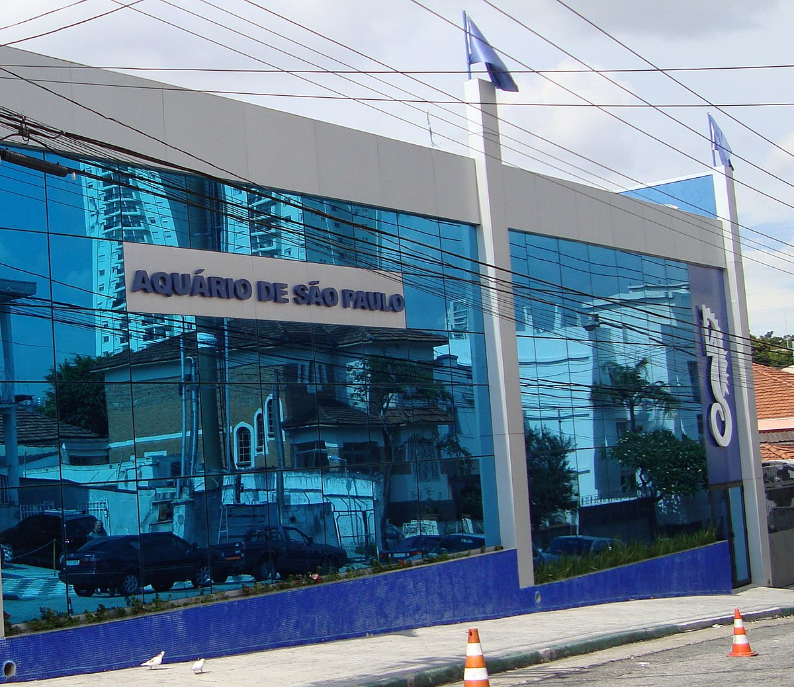

NOS CONHEÇA!

Nossa estrutura
|  |
|
|
O Aquário de São Paulo (ASP) foi inaugurado em 2006, no bairro do Ipiranga, sendo o primeiro Aquário Temático da América Latina.
Nesse momento, o ASP apresentava apenas um setor, com área total de 3 mil m², onde foram construídos 25 tanques/aquários que exibia espécies de peixes, répteis e mamíferos que habitam diversos ecossistemas, como a Floresta Amazônica, o Pantanal e a Bacia do Rio Tietê.
Tendo um total de 15 mil m² e 4 milhões de litros de água onde habitam milhares de animais de centenas de espécies, mantendo-se como referência em tratamento, bem estar e manejo de animais.
Além disso, ao longo desses anos de história, o ASP tem contribuído com diversos projetos de conservação que trabalham com animais em ambiente natural.
Mudanças no nosso Aquário!
Em 2008 houve a primeira ampliação da instituição, com a construção de 2 mil m² para a criação do Mundo Marinho.
Essa ampliação contou com o aumento de 11 tanques/recintos onde passou a demonstrar a mudança gradativa entre o ambiente dulcícola e marinho, com tanques representando água salobra, manguezal, praia arenosa, costão rochoso, oceano e recifes de corais.
Neste novo setor, foram inclusos diversos tipos de peixes, tubarões, raias e pinguins.
Em 2009, 10 novos tanques/recinto foram construídos em 3 mil m² para ampliar o setor Amazônia.
Além da chegada de Tapajós - o peixe-boi-amazônico - e peixes gigantes da Amazônia (como pirarucus, pirararas, tambaquis e jaús) foram as principais novidades do setor.
Recentemente, em 2015, houve uma grande ampliação com a criação de 13 novos tanques/recintos em uma área de 7 mil m².
Essa ampliação convida os visitantes a fazerem uma viagem ao mundo animal para conhecer animais de fora do país. Suricatas, colobus e lêmures do continente africano; raposas voadoras e pítons da Indonésia; cangurus, vombates, equidnas e coalas da Austrália; focas, leão marinho, lobos-marinhos e os ursos polares vieram para encantar e sensibilizar ainda mais o público visitante.
Feito por: Nicollas M. de Castro, Eloá Robles, Bárbara & Kauã Delatorre
Aquário de São Paulo |
A Vida é Melhor ao Vivo.
Rua Huet Bacelar, 407
Ipiranga | São Paulo
Fone: 55 (11) 2273-5500
sav@aquariodesaopaulo.com.br